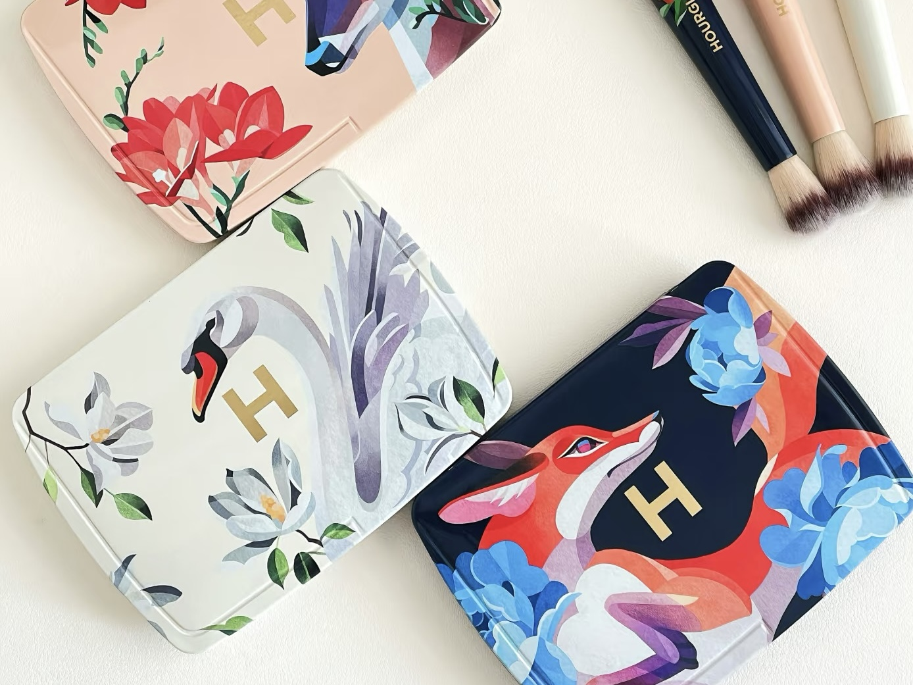
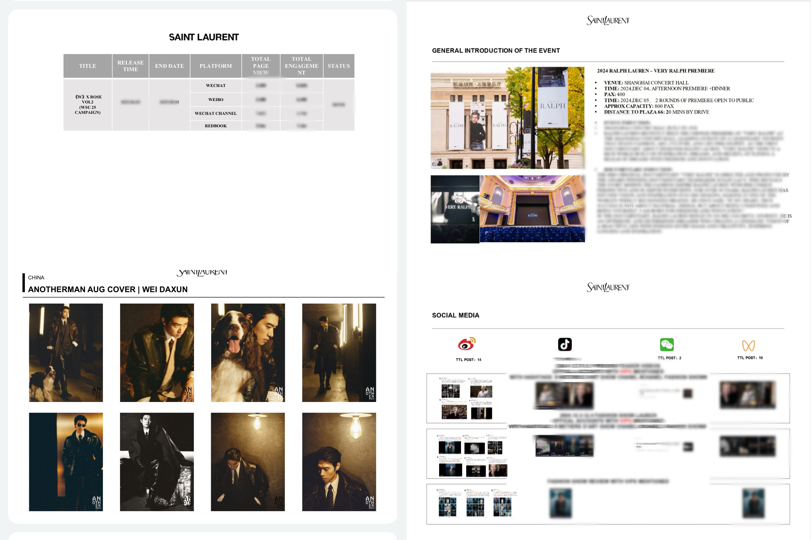

在 Hourglass、YSL、Dior，我学会了用人工精度打磨内容。手工时代 · 业务深耕。
用AI重构每一个重复环节，把省下的时间还给策略与创意。AI重构 · 效率杠杆。
寻找下一个值得被AI优化的业务场景。持续进化 · 寻找下一个场景。
见证从传统工作流到 AI 驱动的效率进化
从30分钟/条到5分钟/条的进化
"2025限定彩盘中国市场种草"

"基于业务经验，用 AI 重构审核流程"
从手动整理到AI实时洞察
"每月输出竞品与内容趋势报告"

Total Competitors
124
+12% vs LW
Avg Price Index
0.92
-3% vs LW
Market Share
18.4%
+1.2% vs LW
从SQL查询到自然语言洞察
"全年15+ campaign投放数据复盘"
SELECT
t1.user_id,
t1.order_date,
SUM(t1.amount) AS daily_total
FROM orders t1
WHERE t1.order_date > '2024-01-01'
GROUP BY 1, 2
ORDER BY 2 DESC;
"从 SQL 查询到自然语言洞察"
SELECT region, SUM(sales) FROM beauty_products WHERE region = '上海' GROUP BY region;

Years Experience
我是一名深耕美妆行业的市场营销专家，曾服务于 Hourglass、YSL、Dior 等顶尖品牌。我不仅懂品牌调性与业务逻辑，更热衷于探索如何利用 AI 技术重构传统工作流。